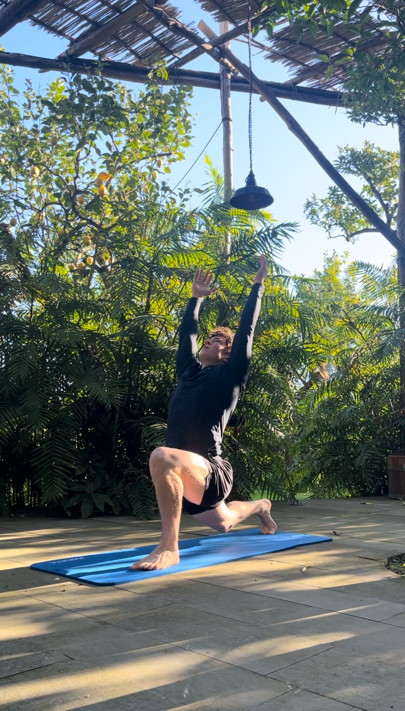

Cardiovascular
504%
Lower mortality risk from elite cardiovascular fitness
Tap for detail •

Fitness is simple.
Or at least it should be.
Ignore the noise. Master the basics.
Fitness isn't complicated.
It's just marketed that way.
To keep you clicking, buying, and guessing, social media gurus and online fitness articles manufacture complexity. They chase engagement by overcomplicating basic health, leaving you frustrated and confused about what it actually takes to be fit.
The reality? It is surprisingly straightforward. There is no hidden secret, no magic routine, and no single "perfect" way to train or eat.
This platform is built to eliminate the noise. To give you the foundational, unfiltered blueprints for muscle, cardiovascular fitness, nutrition, and fat loss—completely free.
Master the basics, take control of your own fitness, and ignore the online bullsh*t.
Hover or tap a card for context.
Cardiovascular
504%
Lower mortality risk from elite cardiovascular fitness
Tap for detail •
Body Composition
292%
Lower sudden cardiac death risk by targeting visceral fat
Tap for detail •
Muscular
33%
Mortality reduction from functional strength
Tap for detail •
Aging
8%
Muscle mass lost per decade after thirty
Tap for detail •
Brain Health
41–45%
Dementia risk reduction from consistent training
Tap for detail •
Metabolic
1.6×
Higher all-cause mortality from insulin resistance
Tap for detail •
Sleep
38%
Better sleep quality from resistance training
Tap for detail •
Longevity
+4–6 yrs
Extra years of life from higher midlife fitness
Tap for detail •
Four pillars. Simple sentences. Full depth in the education library—no fluff, no fads.
Lift close to failure, 2+ times a week. Progressive overload — each session train slighlty harder than last time —slow consistent progress lasts!
Read Full BlueprintPrioritize protein, ignore fad diets. Energy balance and adherence beat the latest headline—food as fuel, not ideology.
Read Full BlueprintFind movement you like, protect your lifespan. Cardiorespiratory fitness predicts longevity—enjoyment drives consistency.
Read Full BlueprintCreate a gentle calorie deficit, aim for slow trends. Sustainable fat loss is a data curve—not a crash, not a miracle week.
Read Full BlueprintThis is not rep-counting coaching. I work as a consultant: auditing your schedule, mapping nutrition against your life, and programming the metrics that matter for sustainable change.
You keep the free blueprints. Consultancy is for bespoke implementation—when complexity is in your calendar, your stress, or your data—not in another generic training plan.

Limited capacity · Application required